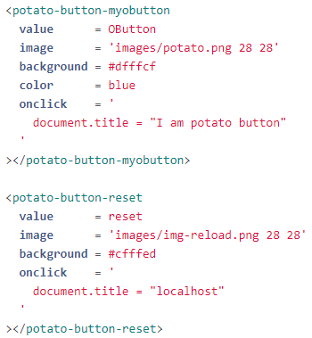
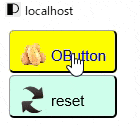
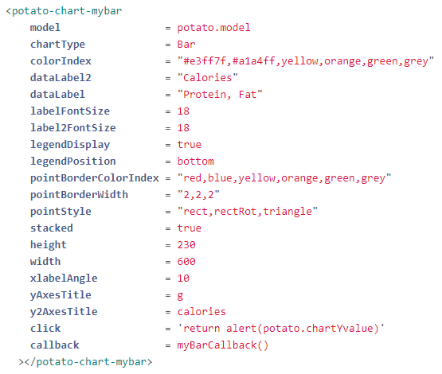
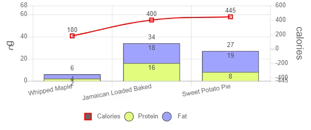

potato javascript is the another way of coding the web application.
It extend the HTML code with custom tag.
It group the relevant code into one location (a html tag) to make the code much easier to maintain
and to let you write less code and keep your code simple to save your time on building application.
It is easy to learn, use and master.
The basic syntax of the code is looked like this:
< potato-[object]-[id] attribute=value />The available objects of potato.js:
With these you can create some simple application as below:

For example if you want to create a button to set the document title to "I am potato button" you just write the following code in html document:
|  |  |
※You can use the keyword "potato" or just "o" as the [system name]
for example < o-button-mybutton /> also will do.
I call it OButton
Example 2: Create a text box object with input keypad (i.e. OKeypad)
|
|
|
Example 3: Create a bar Chart object (i.e. OChart)
|  |  |

potato javascript requires jquery-3.4.1.js or later and jquery-ui.js.
https://jquery.com/download/ or
https://github.com/potatoscript/potato.js
To create chart object with potato the chart.js was required and the library can be obtained from
https://www.chartjs.org/ or
https://github.com/potatoscript/potato.js
I am BRUCE LIM.K.S. (林 建成) the author from SARAWAK SIBU currently live in JAPAN since 2004,
I graduated from engineering background (Mechanical Engineering at Coventry University UK),
but my final year's undergraduate project had led me to the world of programming.
(Developing software to find the natural frequency and damping factor from the input data
as provided from some vibration measurement device.) It combined the fields of engineering and programming.
The result was good and encouraged me continue to develop my programming skill until now.
It is my first and only one JavaScript Library, which was developed since year 2010.
I call it potato javascript or o script (o=potato, why because its as simple as potato)